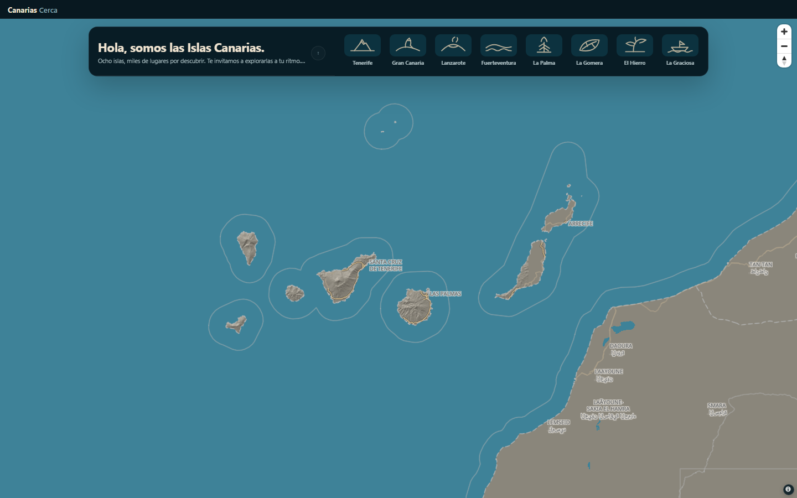
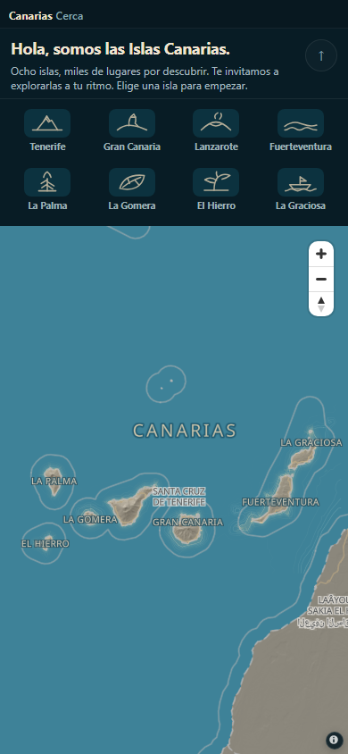

Descubre las islas.
Conoce la tecnología.
Mapas interactivos, pipelines de datos y gestión editorial en una demostración técnica independiente.

@router.get("")
async def get_places(
limit: int = Query(100, ge=1, le=500),
island: str | None = Query(None),
) -> dict[str, Any]:
return trim(source.read(island=island), limit)Capturas auténticas de la web públicaEscritorio + Móvil · 26.11.2026

Capturada el 26 de noviembre de 2026. https://canariascerca.es · Playwright Chromium · Solo página pública, sin acceso al panel de edición.
Explora las islas
Mapa MapLibre con puntos GeoJSON creados para esta demostración.
Puedes explorar los lugares en la lista. El mapa base requiere conexión a Internet.
Explora la información del lugar seleccionado.
Capas Live simuladas
Observa cómo se procesan datos de meteorología, calidad del aire y actividad sísmica.
Datos meteorológicos
Qué ocurre detrás del mapa
Estadísticas turísticas
Dashboard interactivo con índices mensuales ficticios.
Evolución de pasajeros
Separar la ingesta del análisis
La recopilación, la validación y la publicación de datos son procesos independientes. Si falla una actualización, no se inventan observaciones.
Trazabilidad de los datos
La arquitectura real contempla pruebas, fuentes verificables y mecanismos de respaldo. Este demo no accede a servicios privados.
Vista previa del Studio
Edita un borrador local y consulta la vista previa sin publicar nada.
Selecciona un borrador
Edición local, sin autenticación ni escritura en sistemas reales.
Senderos entre volcanes
Una guía editorial de rutas volcánicas para visitantes curiosos.
Arquitectura del sistema
Vista general de los componentes, sin revelar código ni configuración privada.
Explora una respuesta API
Consulta respuestas JSON ficticias que muestran cómo se conecta el frontend con una API tipada, sin exponer servicios privados.
@router.get("")
async def get_places(
limit: int = Query(100, ge=1, le=500),
island: str | None = Query(None),
) -> dict[str, Any]:
return trim(source.read(island=island), limit)Extracto seleccionado y reformateado del backend privado: muestra validación y lectura de datos. Sin credenciales, implementación de servicios ni detalles internos.
Abrir el portal real ↗